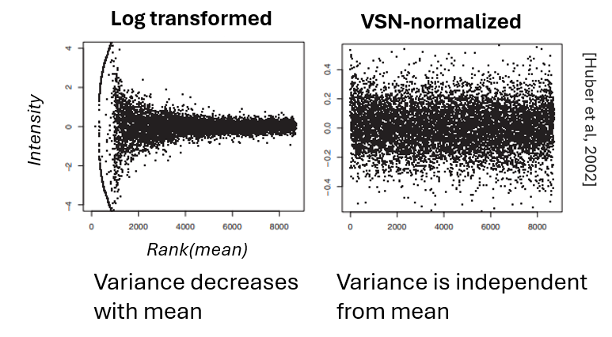
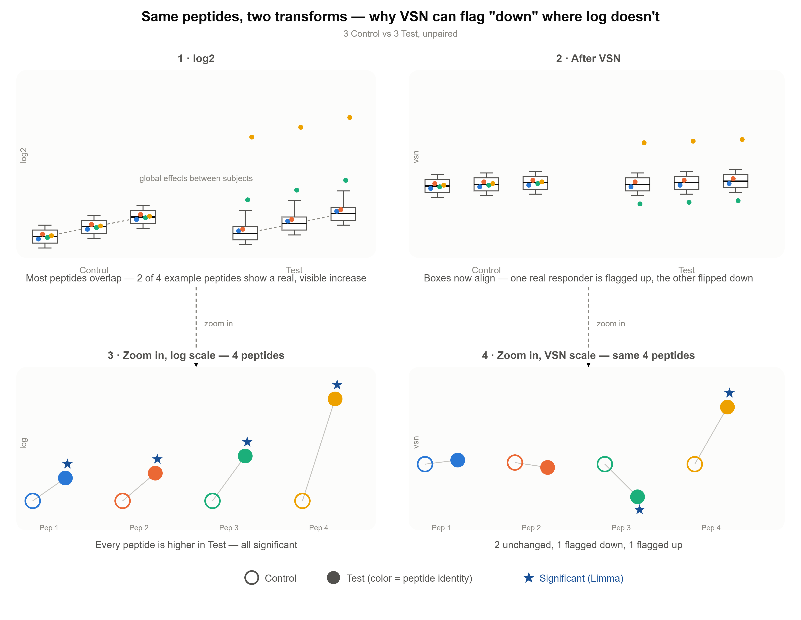

1. Normalization
Overview
Two basic normalizations:
-
Log2
-
VSN (Variance Stabilizing Normalization)
Optional: batch effect correction by ComBat, applied after Log or VSN.
VSN normalization
What does VSN do?
VSN is a standard normalization method - also used in in e.g. transcriptomics.
VSN corrects for overall differences in signal intensity between samples (=global effects between samples). When samples differ mainly in their overall signal (for example, when most peptides show higher signal in sample A than in sample B), VSN reduces this variance. This makes it possible to analyze the data in terms of activities that are relatively high or low compared to the overall signal intensity, rather than absolute differences driven by global intensity shifts.
VSN also stabilizes the variance across the signal intensity range—similar to a log transformation, but without the instabilities near zero signal. At higher signal values, VSN-transformed data approximates log-transformed data.
In log data, low-signal peptides have higher variance. The same fold change of a low-mean peptide is less significant than for a high-mean peptide. VSN counteracts this by making variance independent of the mean → facilitates discovery of significant phosphosites with low signals.

How to interpret VSN results?
When in log data, there is global up or downregulation between test conditions (T vs C), why is the volcano V-shaped for VSN data?
Assume: In log data we observe global upregulation for all kinases or phosphosites in T vs C. After VSN we observe both up-and downregulation.
Interpretation: - in T vs C, the delta for all peptides is still positive. - the VSN-upregulated peptides are those that contribute more to the global upregulation than the average. - the VSN-downregulated peptides are those that contribute less to the global upregulation than the average. The absolute changes are still positive (= in reality, these peptides show upregulation), but VSN shows the signals relative to sample average.

Why are there more peptides newly significant in VSN data, compared to log data?
When a peptide became significant in VSN, the noise of the peptide FC was too high to become significant. VSN's variance-stabilizing transform reduces that noise, and Limma can pick it up as significant. That's a legitimate, well-documented benefit of VSN.
Can we trust those kinases with high specificity scores that go to the opposite direction? Yes. The fold change direction reversal is just the known effect of VSN. Highly specific kinases with reversed fold change direction change less than the average, but they might be still relevant - check whether they are relevant in your model system (e.g. with pathway/network approach whether they are connected to the rest of the highly specific kinases).
How does VSN correct for global effects?

Log or VSN? Decision guide
As default, log2 transformation is used.
VSN is done for comparison of different biological subjects, when global effects are observed, since global effects can be reduced with VSN.
A global effect means that one subject shows overall higher or lower signal than another, for reasons unrelated to the biology we're studying. If left uncorrected, this general difference gets read as if it were biological: with simple log transformation, it shows up as a uniform shift across almost all peptides. This is a bias, hiding truly specific changes. VSN corrects for this: for each sample, it estimates a shared correction from the majority of peptides — assuming most don't actually differ between samples — and removes it before comparing samples. Peptides that move together with the majority are treated as unchanged; only peptides that deviate from that shared pattern keep a nonzero fold change.
VSN-transformed data yields fold change, not absolute values: it reflects how much a peptide deviates from what the majority of peptides did across the compared samples, rather than how much its raw signal actually changed.
Are multiple biological subjects* being compared AND
Are there overal signal intensity differences between subjects**?
│
├── Yes → VSN
│
└── No
│ (same subject & perturbation OR
│ different subjects & no overal signal intensity differences)
│ → Log2
│
└── Both in 1 experiment
→ Log2 for perturbation, VSN for comparison of subjects
* Different biological subjects: e.g. patients; different mice; R/NR cells; WT/KO cells; differentiated cells from stem cells, different cell lines from same indication
NOT different biological subjects: e.g. treatment with shRNA (knockdown).
* VSN should be used when there are global effects between different subjects*. The reason: even without any visible between-sample offset, VSN still corrects based on the assumption that most peptides shouldn't differ.
Special case: 1 mouse genotype, 6 mouse, 6-6 pre-post treatment samples, paired design (same mouse is C and T)
- when there is pairing we usually do paired limma to avoid the bias from different biological subjects
- UKA can't be paired, so for UKA, we must do VSN since the global effects must be first corrected
- → Do limma & UKA on VSN
Can we use VSN to reduce variance in cases when there is only 1 biological subject?
VSN corrects for global effects (reduces variance stemming from global effects). When there is 1 biological subject, the variance can stem from:
- technical effects (e.g. chip, run, which can be corrected by Combat)
- between-replicate variance (not global effect)
Interpretation of cases of low/high CV & limma with / without significance
| CV* | Limma** | Interpretation | |
|---|---|---|---|
| Case 1 | within normal range | Substantial significance | Large relevant effect. |
| Case 2 | Too high | Substantial significance | Probably variance arises from technical effects which are still smaller than biological effects (or paired limma is used within a replicate / chip). |
| Case 3 | within normal range | Not enough significance | Treatment effect is too subtle → optimization or more replicates needed. |
| Case 4 | Too high | Not enough significance | There is either no changes in the kinome, or more replicates are needed. |
* CV: up to ~ 30% biological and ~ 20% technical CV (in a condition/group, between replicates) is considered normal.
** The definition of substantial significance is very arbitrary and depends on the interpreter. Typically, we suggest that a comparison has substantial significance when there are at least a few (FDR-) significant results (p-value threshold: 0.05; FDR threshold: <0.25). In an experiment, we expect at least 1 comparison to be significant.
References
- Huber, W., et al. (2002). Variance stabilization applied to microarray data calibration and to the quantification of differential expression. Bioinformatics, 18(S1), S96–S104.